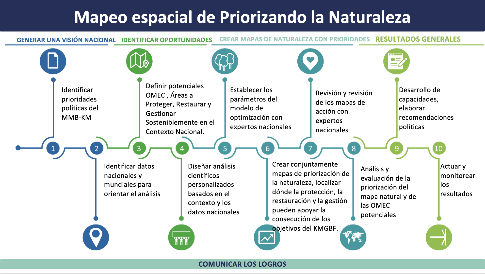
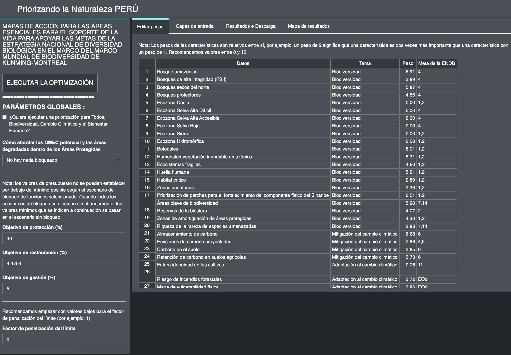

¿Para qué sirve la herramienta web Prioritizing Nature?
La herramienta web Prioritizing Nature es una aplicación interactiva creada con R-shiny y conectada a prioritzr en el backend. Esta herramienta puede ser utilizada por las partes interesadas sin necesidad de conocimientos de programación o modelado, y permite automatizar los pasos 5, 6 y 7 del proceso de mapeo ELSA presentado en la Figura 1.
Figura 1. Flujo de trabajo del mapeo ELSA en el proyecto Prioritizing Nature.
Aplicaciones de la herramienta web Prioritizing Nature
Mostrar las capas de entrada o elemento de planificación;
Ver y descargar los mapas resultantes;
Crear mapas de acción ELSA;
Descargar los mapas resultantes en formato ráster, que pueden utilizarse para análisis posteriores según las necesidades de las partes interesadas en software de Sistemas de Información Geográfica (SIG).
Descargar los resultados y los parámetros del modelo aplicado en el análisis como una tabla resumen en formatos .xlsx y .csv, que pueden usarse en Excel u otras herramientas.
Crear diferentes acciones ELSA modificando los parámetros relacionados con el porcentaje (%) del territorio nacional asignado a las acciones de protección, restauración y gestión. Estas configuraciones pueden adaptarse a los objetivos políticos del país en términos de conservación, restauración, protección, entre otros.
Editar el parámetro de factor de límite de penalización según las necesidades del análisis;
Editar los pesos de cada una de las capas de entrada o elementos de planificación;
Crear mapas de priorización con un nuevo grupo de partes interesadas;
Volver a ejecutar el análisis ELSA con capas de entrada actualizadas.
La herramienta web ejecuta optimizaciones rápidamente (normalmente en 5-10 minutos). Por lo tanto, puede usarse para generar y perfeccionar planes de conservación en tiempo real durante las reuniones con las partes interesadas, y contribuir a un proceso de toma de decisiones más transparente, inclusivo y participativo.
Figura 2. Interfaz de la herramienta web Prioritizing Nature Perú.
Importante
Accede a la herramienta web Prioritizing Nature Perú aquí